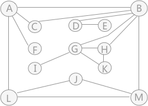
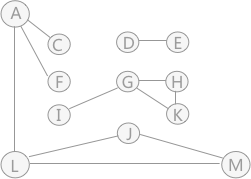
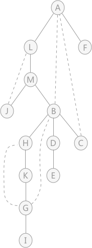
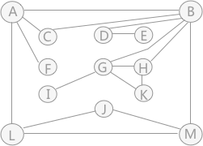
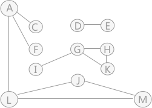
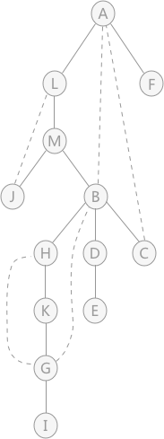

重连通图及重连通分量
在无向图中，如果任意两个顶点之间含有不止一条通路，这个图就被称为重连通图。在重连通图中，在删除某个顶点及该顶点相关的边后，图中各顶点之间的连通性也不会被破坏。
在一个无向图中，如果删除某个顶点及其相关联的边后，原来的图被分割为两个及以上的连通分量，则称该顶点为无向图中的一个关节点（或者“割点”）。

图 1 连通图
图 1 是连通图但不是重连通图，图中有4个关节点，分别是：A、B、D 和 G。比如删除顶点 B 及相关联的边后，原图就变为：

图 2 连通分量
可以看到，图被分割为各自独立的 3 部分，顶点集合分别为：{A、C、F、L、M、J}、{G、H、I、K} 和 {D、E}。
了解了什么是关节点后，重连通图其实就是没有关节点的连通图。
在重连通图中，只删除一个顶点及其相关联的边，肯定不会破坏其连通性。如果一味地做删除顶点的操作，直到删除 K 个顶点及其关联的边后，图的连通性才遭到破坏，则称此重连通图的连通度为 K 。
同样，小到城市之间，大到国家之间的航空网也可以看作是一个连通图，但如果此图建设成为重连通图，当某条航线因为天气等因素关闭时，飞机仍可以从别的航线到达目的地。
在战争中，有“兵马未动，粮草先行”的说法，可见后勤补给对军队的重要性。如果补给线是一个重连通图，就不用过于担心补给线被破坏的问题，因为即使破坏一条，还有其它的，只要连通度足够大。
对于任意一个连通图来说，都可以通过深度优先搜索算法获得一棵深度优先生成树，例如，图 1 通过深度优先搜索获得的深度优先生成树为：

图 3 深度优先生成树
虚线表示遍历生成树时未用到的边，简称“回边”。也就是图中有，但是遍历时没有用到，生成树中用虚线表示出来。
在深度优先生成树中，图中的关节点有两种特性：
所以，判断一个图是否是重连通图，也可以转变为：判断图中是否有关节点，如果没有关节点，证明此图为重连通图；反之则不是。
拿图 3 的生成树来说，利用两个特性判断每个顶点是否为关节点：
综上所述，图 3 中的关节点有 4 个，分别是： A 、 B 、 D 、 G 。
在一个无向图中，如果删除某个顶点及其相关联的边后，原来的图被分割为两个及以上的连通分量，则称该顶点为无向图中的一个关节点（或者“割点”）。

图 1 连通图

图 2 连通分量
了解了什么是关节点后，重连通图其实就是没有关节点的连通图。
在重连通图中，只删除一个顶点及其相关联的边，肯定不会破坏其连通性。如果一味地做删除顶点的操作，直到删除 K 个顶点及其关联的边后，图的连通性才遭到破坏，则称此重连通图的连通度为 K 。
重连通图的实际应用
如今的通信网络对人们的生活有着重要的影响，如果将通信网络比做一个巨大的连通图的话，它的连通度 K 值越高，证明其稳定性越好，即使某一个站点发生故障无法工作也不会影响整个系统的正常工作。同样，小到城市之间，大到国家之间的航空网也可以看作是一个连通图，但如果此图建设成为重连通图，当某条航线因为天气等因素关闭时，飞机仍可以从别的航线到达目的地。
在战争中，有“兵马未动，粮草先行”的说法，可见后勤补给对军队的重要性。如果补给线是一个重连通图，就不用过于担心补给线被破坏的问题，因为即使破坏一条，还有其它的，只要连通度足够大。
判断重连通图的方法
了解了什么是重连通图之后，如何编写程序直接判断一个图是否是重连通图呢？对于任意一个连通图来说，都可以通过深度优先搜索算法获得一棵深度优先生成树，例如，图 1 通过深度优先搜索获得的深度优先生成树为：

图 3 深度优先生成树
虚线表示遍历生成树时未用到的边，简称“回边”。也就是图中有，但是遍历时没有用到，生成树中用虚线表示出来。
在深度优先生成树中，图中的关节点有两种特性：
- 首先判断整棵树的树根结点，如果树根有两条或者两条以上的子树，则该顶点肯定是关节点。因为一旦树根丢失，生成树就会变成森林。
- 然后判断生成树中的每个非叶子结点，以该结点为根结点的每棵子树中如果有结点的回边与此非叶子结点的祖宗结点相关联，那么此非叶子结点就不是关节点；反之，就是关节点。
注意：必须是和该非叶子结点的祖宗结点（不包括结点本身）相关联，才说明此结点不是关节点。
所以，判断一个图是否是重连通图，也可以转变为：判断图中是否有关节点，如果没有关节点，证明此图为重连通图；反之则不是。
拿图 3 的生成树来说，利用两个特性判断每个顶点是否为关节点：
- 首先，判断树根结点 A ，由于有两个孩子，也就是有两棵子树，所以 A 是关节点。然后判断树中所有的非叶子结点，也就是： L 、 M 、 B 、 D 、 H 、 K 、 G ；
- L 结点为根结点的子树中 B 结点有回边直接关联 A ，所以， L 不是关节点；
- 在以 M 结点为树根的子树中，J 结点和 B 结点都有回边关联 M 结点的祖宗结点，所以，M 不是关节点；
- 以 B 结点为根结点的 3 棵子树中，只有一棵子树（只包含结点 C ）与 B 结点的祖宗结点 A 有关联，其他两棵子树没有，所以结点 B 是关节点；
- 以 D 结点为根结点的子树中只有结点 E，且没有回边与祖宗结点关联，所以，D 是关节点；
- 以 H 结点为根结点的子树中， G 结点与 B 结点关联，所以， H 结点不是关节点；
- K 结点和 H 结点相同，由于 G 结点与祖宗结点 B 关联，所以 K 结点不是关节点；
- 以 G 结点为根结点的子树中只有一个结点 I，没有回边，所以结点 G 是关节点；
综上所述，图 3 中的关节点有 4 个，分别是： A 、 B 、 D 、 G 。
关注公众号「站长严长生」，在手机上阅读所有教程，随时随地都能学习。内含一款搜索神器，免费下载全网书籍和视频。

微信扫码关注公众号